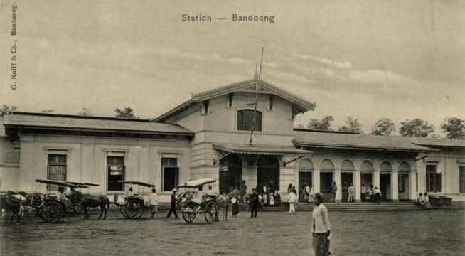
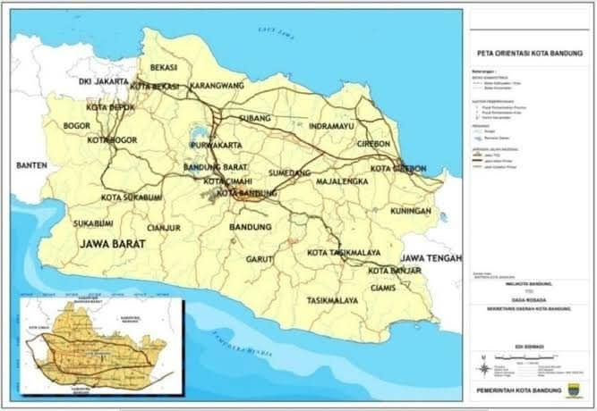
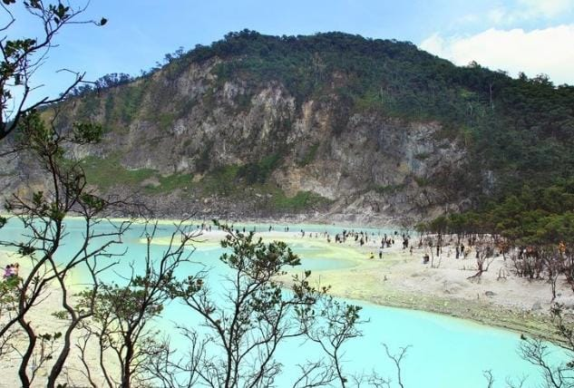
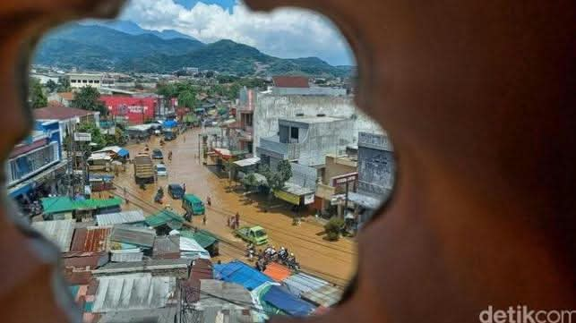
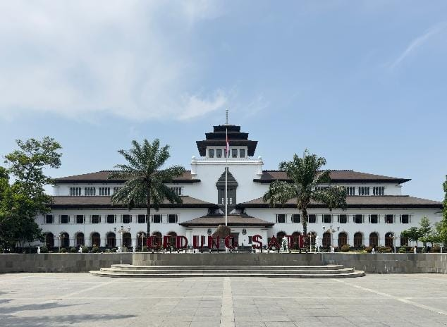

Sejarah

Kota Bandung didirikan pada 25 September 1810 saat ibu kotanya dipindahkan ke kawasan Alun-Alun oleh Bupati R.A. Wiranatakusumah II dan Gubernur Jenderal Daendels. Kota ini berkembang pesat menjadi pusat perkebunan berjuluk Paris van Java, mencatat sejarah perjuangan lewat peristiwa Bandung Lautan Api (1946), serta menjadi tuan rumah Konferensi Asia Afrika (1955).
Selain aspek politik dan perjuangan, Bandung memiliki sejarah penting sebagai pusat pendidikan dan sains lewat berdirinya Technische Hoogeschool te Bandoeng (kini ITB) pada 1920 serta Observatorium Bosscha pada 1928, menjadi kiblat mode dan industri tekstil sejak era kolonial hingga berjuluk "Kota Fashion", serta mencatatkan sejarah teknologi komunikasi dunia melalui pengoperasian Radio Pemancar Malabar pada 1923 yang menghubungkan komunikasi nirkabel jarak jauh ke Belanda.
Geografis

Secara geografis, Kota Bandung terletak di tengah Provinsi Jawa Barat dan berada di dalam kawasan cekungan (Bandung Basin) yang dikelilingi oleh jajaran pegunungan. Wilayah ini berada pada ketinggian rata-rata 768 meter di atas permukaan laut (mdpl), dengan kontur tanah yang miring dari titik tertinggi di sebelah utara (1.050 mdpl) hingga titik terendah di sebelah selatan (675 mdpl). Wilayah Kota Bandung secara administratif dikelilingi oleh Kabupaten Bandung Barat di bagian utara dan barat, Kabupaten Bandung di bagian selatan dan timur, serta Kabupaten Sumedang di sebelah timur.
Topografi pegunungan dan letaknya yang berada di dataran tinggi membuat Bandung memiliki iklim tropis yang cenderung sejuk dan lembap sepanjang tahun dibandingkan kota-kota pesisir. Di bidang hidrologi, wilayah ini dipengaruhi oleh sistem aliran Sungai Citarum beserta anak-anak sungainya, seperti Sungai Cikapundung dan Sungai Cidurian, yang mengalir membelah tengah kota dan memegang peranan penting dalam tata air serta sejarah pemukiman masyarakat Bandung.
Wisata

Kawah Putih Ciwidey merupakan destinasi wisata alam yang paling ikonik dan unik di Bandung. Terletak di kawasan Bandung Selatan, tempat ini merupakan danau kawah vulkanik yang terbentuk dari letusan Gunung Patuha pada abad ke-10 dan ke-12. Air danau kawah ini memiliki ciri khas warna putih kehijauan yang memukau dan dapat berubah warna tergantung kadar belerang, suhu, serta cuaca di sekitarnya. Dikepung oleh tebing-tebing kapur dan dikelilingi hutan cantigi yang eksotis serta diselimuti kabut tipis bersuhu dingin, Kawah Putih menawarkan pemandangan alam dramatis yang sulit ditemukan di tempat lain.
Dayeuh Kolot

Dayeuhkolot, yang dulunya bernama Krapyak, merupakan wilayah pemukiman sekaligus cikal bakal tertua di wilayah Bandung yang secara harfiah berasal dari bahasa Sunda yang berarti "kota tua". Kawasan ini resmi menjadi pusat pemerintahan pertama Kabupaten Bandung sejak pembentukannya pada tahun 1641 di bawah kekuasaan Kesultanan Mataram dengan Tumenggung Wiraangunangun sebagai bupati pertama. Namun, karena lokasinya yang kerap dilanda banjir dari luapan Sungai Citarum serta pertimbangan strategis pembangunan Jalan Raya Pos (De Grote Postweg), pusat pemerintahan akhirnya dipindahkan sekitar 11 kilometer ke utara—yaitu kawasan Alun-Alun Kota Bandung saat ini—pada tahun 1810 atas instruksi Gubernur Jenderal Daendels dan Bupati R.A. Wiranatakusumah II.
Gedung Merdeka

Gedung Merdeka yang berlokasi di Jalan Asia Afrika, Bandung, merupakan bangunan bersejarah berarsitektur Art Deco megah rancangan Wolff Schoemaker dan van Galen Last yang awalnya berdiri pada tahun 1895 sebagai tempat perkumpulan kaum elite kolonial bernama Societe Concordia. Dinamai Gedung Merdeka oleh Presiden Soekarno menjelang Konferensi Asia Afrika (KAA) 1955, gedung ini mengukir sejarah dunia sebagai tempat dilangsungkannya KAA pertama yang dihadiri pemimpin 29 negara serta melahirkan Dasasila Bandung, hingga kini difungsikan sebagai Museum Konferensi Asia Afrika yang merawat ruang sidang otentik beserta berbagai dokumentasi bersejarah tersebut.